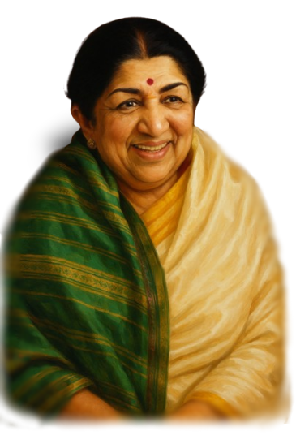

"Music is in my soul. It is my prayer,
my worship, and my life."

Biography
Lata Mangeshkar – The Nightingale of India 🎶
Lata Mangeshkar (28 September 1929 – 6 February 2022) was one of India’s greatest playback singers, admired
as the Nightingale of India. Born in Indore to classical musician Pandit Deenanath Mangeshkar, she began
singing at an early age and took responsibility for her family after her father’s death.
Her career spanned over 70 years, during which she recorded songs in 36+ Indian languages and worked with
legendary composers like S.D. Burman, R.D. Burman, Madan Mohan, Laxmikant–Pyarelal, and A.R. Rahman. Her
timeless melodies such as Lag Jaa Gale and Aayega Aanewala made her the voice of generations.
She was honored with the Bharat Ratna (2001), Padma Vibhushan, Dadasaheb Phalke Award, several National Film
Awards, and countless other recognitions.
Lata ji passed away on 6 February 2022, but her music lives on forever, inspiring millions across the world.